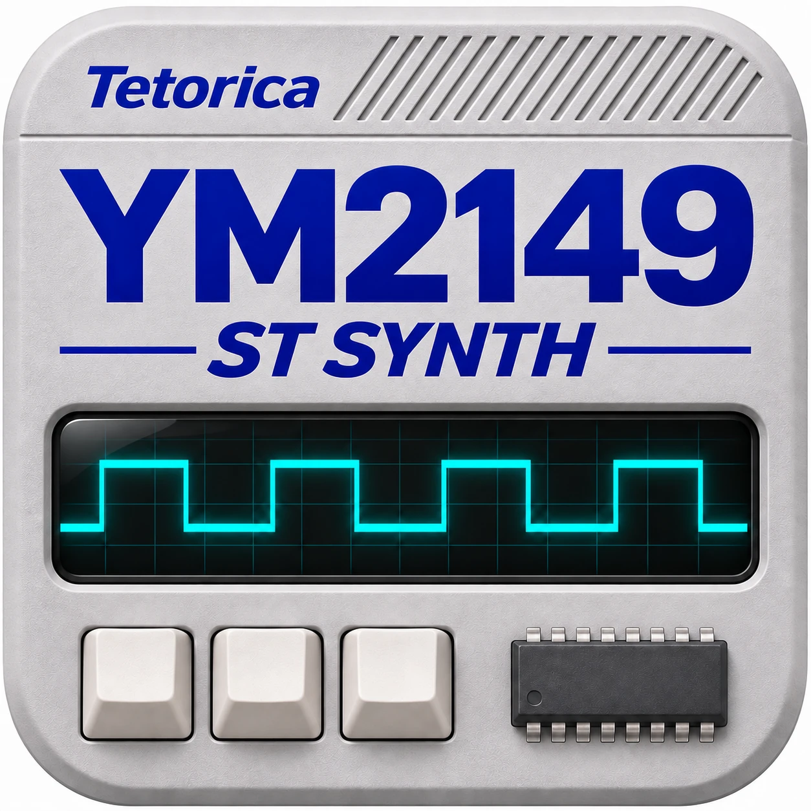

TONE · NOISE · HARDWARE ENVELOPE
Tetorica YM2149 ST Synth
Atari ST · Three voices. One shared envelope. Your code.
Enable audio, then play the keyboard. Editing does not start audio.
Live output after Master volume.
?
Auto shares keyboard notes across three physical channels and replaces the oldest note when full. A CH selects that voice for display, editing and keyboard input. Selecting a tab preserves the other channels; editing in Auto applies that setting to all three. Code and the keyboard use the same chip.
Auto · three tone voices · round robin.
Channel voice
?
Tone and Noise can sound together. Fixed volume is 0–15; Hardware envelope replaces it with the shared envelope level. At 2 MHz, tone frequency is 2,000,000 ÷ (16 × period). Period 0 behaves as 1. The lowest tone is about 30.53 Hz; keyboard notes below this hardware range are limited to that pitch.
Shared generators
ALL THREE CHANNELS?
The chip has one noise generator and one envelope generator. These settings affect every channel using them. Changing Shape or pressing Retrigger envelope restarts that shared envelope for all participating voices. Changing only Envelope period does not restart it. This is the YM2149 hardware envelope; the Synth adds no ADSR controls.
Chip output
One YM2149 · controls, keyboard and Code
?
Chip gain scales the shared YM2149 output before Master. Both are software output controls, separate from each channel's fixed volume and the hardware envelope.
Software performance · this same YM2149 chip. Run: Ctrl/Cmd+Enter · Apply: Ctrl/Cmd+Shift+Enter.
Code is saved in Files. Restoring a project never runs it.
Console
?
Use const ay = await useSoundChip("ay8910"). Hardware controls are synchronous; CH1–CH3 are the physical channels. Use setBpm() and await beat() for tempo. Run starts fresh; Apply retains context and named loops. Changing tabs and editing controls keep Code running. Click outside the editor to play computer keys. Noise and envelope settings are shared hardware state.